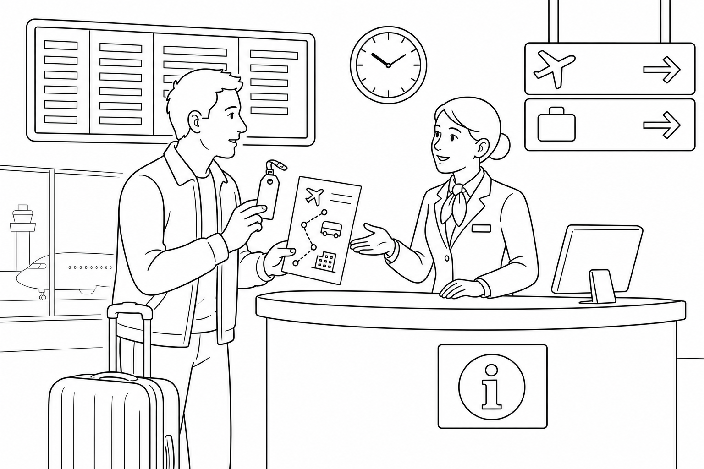

B4 Foundation Test 1
Travel basics, personal plans, and recent problems. Listen for useful details, read practical information, write to solve a problem, and use grammar in context.

| Section | Points | Score |
|---|---|---|
| 1. Listening | 25 | ____ / 25 |
| 2. Reading | 20 | ____ / 20 |
| 3. Writing | 20 | ____ / 20 |
| 4. Grammar and Vocabulary | 35 | ____ / 35 |
| Total | 100 | ____ / 100 |
Suggested time: 70 minutes. The teacher will read the listening text twice. You may take short notes. Write clearly. For open answers, communication matters as well as accuracy.
Listening: Arrival Plan and Missing Backpack
Before reading: give students 45 seconds to preview Questions 1–5. Read the complete script once at natural but careful B4 speed. Pause for 30 seconds. Read it a second time. Do not explain vocabulary during the test. Total recommended time: Listening 12 min, Reading 15 min, Writing 18 min, Grammar/Vocabulary 25 min.
Worker: Good afternoon. How can I help you?
Traveler: Hi. I arrived on the bus from Oxford at two fifteen. My friend is going to meet me at the main entrance at three, but I have lost my green backpack.
Worker: When did you last see it?
Traveler: I saw it on the bus when we stopped at Terminal Two. I have already checked the café and the bathroom, but I haven't spoken to the bus company yet.
Worker: You should go to the transport desk next to Exit Four. Take this form and show your ticket. The desk closes at four thirty.
Traveler: So I need to go to the transport desk by Exit Four before four thirty and show my ticket. Is that right?
Worker: Exactly.
Answer with a word, phrase, or short sentence.
What time did the traveler arrive?
At 2:15.Where will the traveler meet the friend?
At the main entrance.What has the traveler lost?
A green backpack.Name one place the traveler has already checked.
The café or the bathroom.Write two details the traveler confirms at the end.
Any two: transport desk; by Exit 4; before 4:30; show the ticket.Reading: Message from the Transport Desk
Hello Marina,
We have found a green backpack on Bus 64. It arrived at our lost-property office this morning. Before you collect it, please complete the online form and bring a photo ID. The office is inside Central Bus Station, across from Platform 9. It is open from 9:00 to 17:30 on weekdays. We cannot send the backpack by post.
If you cannot come this week, call us before Friday so we can keep the bag for seven more days.
Transport Support Team
Where is the backpack now?
At the lost-property office inside Central Bus Station.What two things must Marina do or bring before collection?
Complete the online form and bring a photo ID.Can the team mail the backpack? Give evidence from the message.
No. The message says they cannot send it by post.What should Marina do if she cannot collect it this week?
Call before Friday so they can keep it for seven more days.Writing: Ask for Help with Your Arrival
You are arriving in another city tomorrow, but your train time has changed. Write 60–80 words to the person who will meet you. Include:
- the original and new arrival time;
- where you will wait;
- one thing you have already done to update the plan;
- one clear question or request;
- a polite closing.
| Writing criterion | Points | Teacher score |
|---|---|---|
| Completes the communicative purpose and includes required details | 8 | ____ / 8 |
| Message is organized and understandable | 4 | ____ / 4 |
| Target language supports meaning | 4 | ____ / 4 |
| Vocabulary, spelling, and punctuation are clear enough | 4 | ____ / 4 |
Do not deduct the same error twice. A message with imperfect grammar can score well when it achieves the purpose and remains easy to understand.
Grammar and Vocabulary in Context
Complete or rewrite each travel situation.
Write a confirmation sentence for this instruction: “Go to Gate 8 before 6:00 and show your booking.”
Model: So I need to go to Gate 8 before 6:00 and show my booking, right?Correct the sentence: “I have lost my passport yesterday.”
I lost my passport yesterday. / I have lost my passport. (without yesterday)What to Keep and What to Practice Next
| Skill | Score | Next action |
|---|---|---|
| Listening | ____ / 25 | Listen for time, place, action, and confirmation. |
| Reading | ____ / 20 | Underline instructions and restrictions in practical texts. |
| Writing | ____ / 20 | Put the problem, update, and request in a clear order. |
| Grammar/Vocabulary | ____ / 35 | Use time markers to choose the tense and confirm details. |